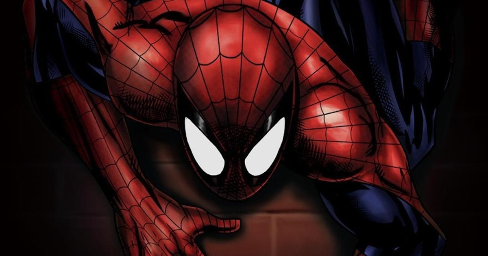

About Spider-Man
Spider-Man originates all the way back from Marvel Comics. First appeared in a Fantastic Four feature. He can shoot webs and swing around the city.
Spider-Man and his Villains
Spider-Man's Characteristics
- He can shoot webs from his hands
- He can swing around the city
- He has super-strength
Spider-man's villains
Spider-man has an enormous roster of villains that he has fought. Click on the images to read more about them: